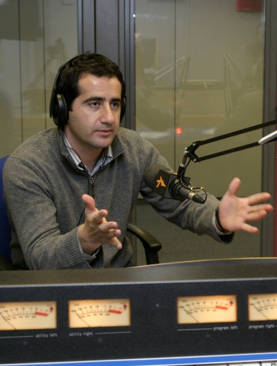

Biography: Kenan Aliyev

Courtesy of Kenan Aliyev
Kenan Aliyev
Kenan Aliyev, a native Azerbaijani, first joined Radio Free Europe/Radio Liberty in 1994 as a stringer for its Russian service. He moved to Washington, DC, where he worked for RFE and for Voice of America. He returned to Prague in 2004 as director of the Azerbaijani service of RFE/FL. Among other services, RFE trained significant numbers of journalists in Azerbaijan to work to world standards of accuracy and objectivity.
Aliyev on the importance of investigative journalism.